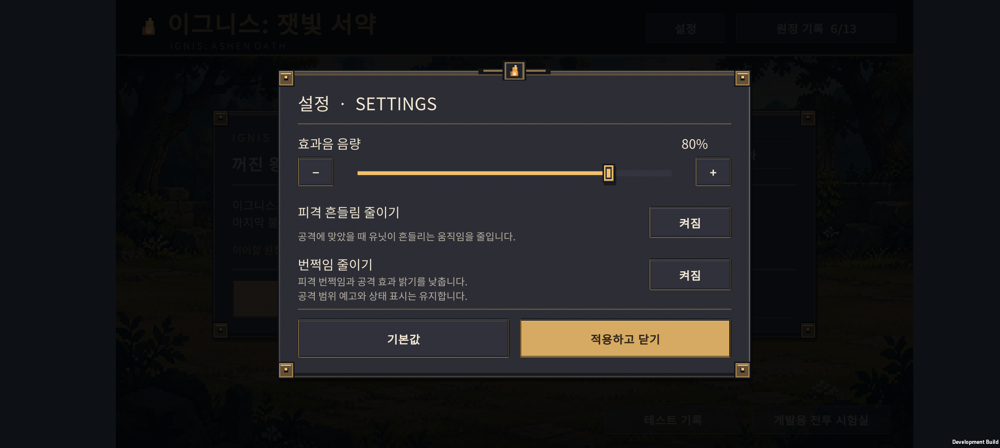
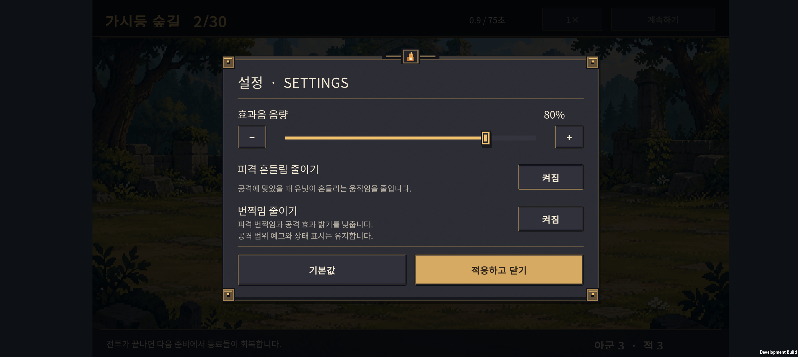
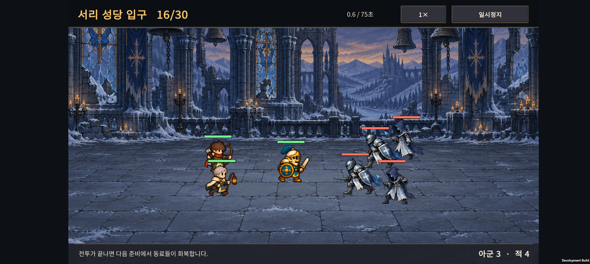
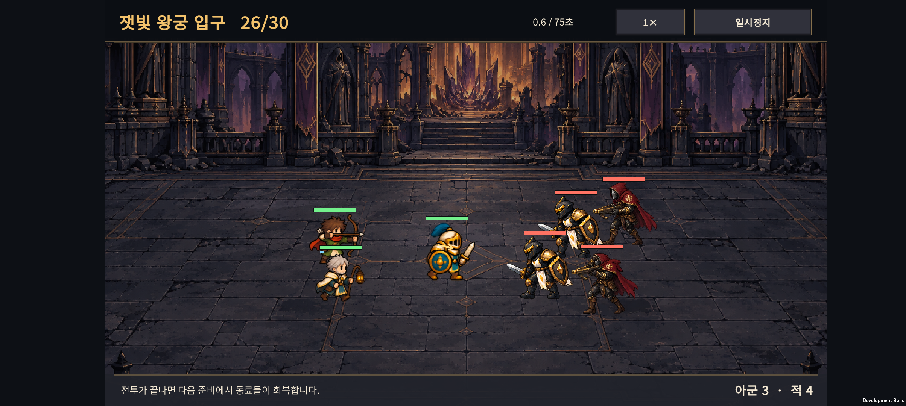
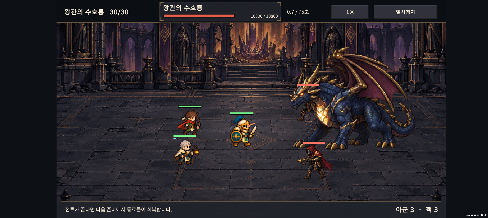
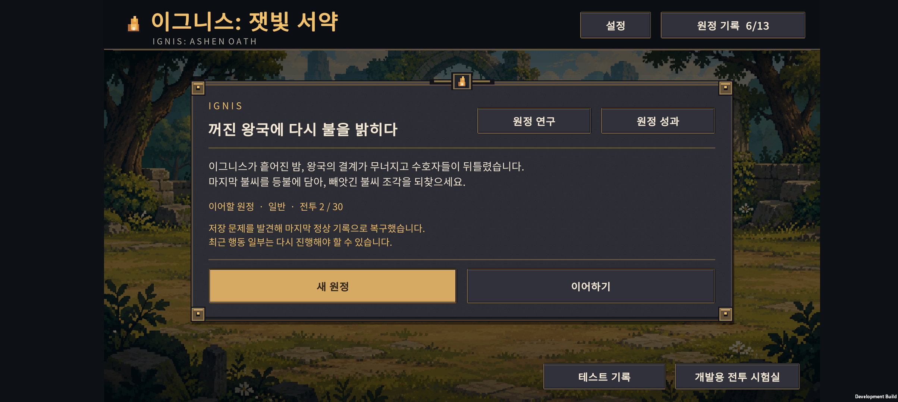
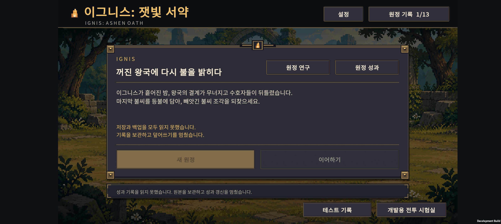

v0.44 · 저장 복구와 공통 설정
2026-10-26 · IGNIS: ASHEN OATH · Normal 30전투
이번 구현: 원정 기록의 정상 백업·자동 복구, 거점과 전투 일시정지에서 여는 공통 설정, 전투 상하단 문구 잘림 수정. 점수 순위는 아래의 기획 제안으로 정리했다.
1. 저장과 복구
한 시점의 기록을 함께 보관
원정·골드·편성·전투 결과, 성과·연구·연구 PT의 근거, 이야기 해금과 튜토리얼 진행을 하나의 저장 묶음으로 만든다. 연구 PT는 기존처럼 최초 격파 기록에서 계산한다. 저장 복구 때문에 보상이 중복 지급되지 않도록 기존 규칙을 유지한다.
- 저장 위치: Unity
Application.persistentDataPath/Saves/. account-a.sav,account-b.sav에 완성된 기록을 번갈아 쓴다.- 새 기록은 기존 정상 파일을 유지한 채 다른 파일에 기록하고, 디스크 반영과 재검사를 마친다.
- 기록 순번·SHA-256·데이터 규칙을 검사해 가장 최근의 정상 기록을 읽는다.
- 한쪽이 손상되거나 없어지면 남은 정상 기록으로 복구하고 거점에서 알린다. 최근 행동 일부는 다시 해야 할 수 있다.
- 손상된 파일을 교체하기 전
.damaged사본을 남긴다. 각 슬롯당 사본 한 개로 수량을 제한한다. - 두 파일이 모두 손상되면 자동 초기화와 새 원정 저장을 막고 원본을 보관한다. 지원하지 않는 새 버전의 저장도 덮어쓰지 않는다.
기존 설치에서 업데이트
새 저장 파일이 아직 없을 때 기존 PlayerPrefs 기록을 읽어 새 방식으로 이행한다. 원정·연구·이야기·안내를 모두 읽은 후 한 번에 저장한다. 옛 PlayerPrefs 원본은 남긴다.
새 방식의 파일이 이미 있는데 둘 다 손상된 경우에는 오래된 PlayerPrefs로 몰래 되돌리지 않는다. 기존 성과나 이야기 기록부터 읽지 못한 경우에도 빈 기록으로 덮어쓰지 않는다.
복구 범위: 같은 기기의 앱 저장 파일 손상과 기록 도중 중단을 다룬다. 앱 삭제·앱 데이터 삭제·기기 분실을 복구하는 클라우드 저장은 아직 없다. 체크섬은 손상 탐지 수단이며 치트 방지 수단이 아니다.
2. 공통 설정
거점 상단의 설정, 전투 일시정지 → 설정에서 같은 창을 연다. 전투 중 설정을 열어도 전투는 계속 멈춰 있다. 설정을 닫으면 일시정지 화면으로 돌아간다.
| 항목 | 실제 적용 |
|---|---|
| 효과음 음량 | 0~100%, 드래그 또는 −/+ 버튼으로 조절. 즉시 반영 |
| 피격 흔들림 줄이기 | 피격 시 좌우 흔들림과 피격 자세 전환을 줄임. 걷기·공격 동작은 유지 |
| 번쩍임 줄이기 | 피격 색 변화와 짧은 흰색 타격 번쩍임을 제거하고 공격 효과 밝기를 낮춤 |
| 기본값 | 음량 100%, 두 감소 옵션 꺼짐 |
| 적용하고 닫기 | 설정 저장 후 원래 화면으로 돌아감 |
공격 범위 예고, 빙결·화상·중독 상태 표시와 피해 수치는 유지한다. 감소 옵션은 전투 계산·사거리·위력을 바꾸지 않는다. 현재 재생되는 게임 소리는 효과음이며, 향후 BGM을 추가할 때 음악 음량을 별도로 연결한다.
설정은 진행 기록과 독립적으로 저장한다. 정상 설정의 이전 값도 보관하고 주 기록을 읽지 못하면 이전 값을 사용한다. 계정 기록이 손상되어도 설정 화면은 열 수 있다.
창은 가로 기준 화면의 중앙에 배치하고, 하단 버튼은 동일한 32 여백·64 높이·16 간격을 사용한다. 조절 막대는 게임의 금색·짙은 금속 패널 스타일을 따른다.


전투 상하단 문구 잘림 수정
일반 전투명·시간·하단 기술 설명·아군/적 수에 남아 있던 기본 글자 패딩을 제거하고 한 줄 세로 중앙 정렬을 적용했다. 상단 표시 높이는 48, 하단은 42로 확보했다. 하단 안내와 인원수 영역을 분리하고 인원수는 오른쪽 정렬한다. 화면 끝에서 아래 여백도 확보한다.
실제 30개 전투명, 보스 6종의 이름·HP, 시간, 아군 05명·적 012명의 78가지 표기 조합, 동료 30형태의 기술 발동 문구와 현재 안내 문자열의 크기를 검사했다.
최종 APK를 Buddy2에 설치한 뒤 2·8·13·16·21·26·30전투를 캡처했다. 6개 지역과 마지막 보스 화면에서 상단 전투명·시간·보스 HP, 하단 안내와 아군·적 수가 잘리지 않는 것을 확인했다.



3. 점수 순위 제안
2026-10-26 개편: 아래는 당시의 제안 이력이다. 이후 사용자가 연구도 새 원정에서 초기화하는 방향을 명확히 했다. v0.45 개편안은 영구 강화 제거·일반 원정 점수 우선으로 이 절을 대체한다. 실제 적용과 검증은 v0.45 인계 문서에 정리했다.
점수 경쟁은 같은 30전투를 다른 빌드로 반복할 동기가 될 수 있다. 현재 영구 연구의 효과가 있으므로 다음 두 종류로 나누는 안을 권한다. 이 절은 제안이며 랭킹 기능을 구현한 상태는 아니다.
| 종류 | 조건 | 목적 |
|---|---|---|
| 일반 원정 개인 기록 | 자신의 연구 상태를 함께 표시. 같은 버전·난이도·연구 조건에서 비교 | 내 이전 기록과 편성을 비교 |
| 온라인 주간 도전 | 같은 난수 시드·연구·시작 자원과 편성 조건. 원정 중 성장·전술 선택은 자유 | 공통 조건에서 빌드와 배치 경쟁 |
점수 원칙
- 클리어한 전투 수를 가장 크게 반영. 다음 전투까지 진행한 기록이 작은 속도 보너스에 역전되지 않게 한다.
- 30전투 완주 보너스와 남은 등불을 반영한다.
- 실제 전투 시간은 작은 보조 점수로 사용한다. 준비·설명 읽기·일시정지 시간은 감점하지 않는다.
- 총 피해·총 회복·남긴 골드를 주 점수로 삼지 않는다. 오래 버티기, 무한 회복, 성장 지출 회피를 점수 때문에 강요하지 않도록 한다.
- 1배속·2배속은 같은 전투 시뮬레이션 시간으로 계산한다. 난이도와 밸런스 버전이 다르면 기록을 분리한다.
정확한 배점은 실제 기록 분포를 보고 정한다. 첫 단계는 개인 원정 기록에 점수 근거·최종 편성·연구 조건을 남기는 기능이 적절하다. 이후 주간 도전과 온라인 순위를 추가한다.
온라인 순위에 필요한 별도 개발
- 서버가 발급한 도전 조건과 난수 시드, 참여자 식별과 제출 중복 방지.
- 저장된 클라이언트 점수를 그대로 신뢰하지 않고, 행동 기록을 서버에서 재검산하거나 그에 준하는 검증.
- 보상·광고로 얻는 추가 기회가 있다면 경쟁 규칙을 별도로 정함.
- 서버·개인정보 처리·운영 비용과 기록 초기화 정책 결정.
이번 로컬 백업과 체크섬만으로 공정한 온라인 순위를 보장할 수는 없다.
4. 검증
| 범위 | 결과 |
|---|---|
| 저장 Core | 150개 조건 통과. 30전투의 시작·결과·진행 경계 90곳, 중복 보상, 연구 유지, 파일 일부 손상 5구간, 양쪽 손상, 파일 누락, 미래 버전, 설정 경계값 |
| Unity 통합 | 18개 조건 통과. 실제 JsonUtility·화면 코드로 옛 기록 이행, 저장·복구 알림, 원본 보관, 중복 PT 방지, 설정 재로딩과 문구 영역 검사 |
| 관련 회귀 | 원정 2,052개, 성과·연구 421개, 이야기 26개, 안내·배속·결과 계산 5,744개 조건 통과 |
| 전투 글자 | 30전투명·78가지 인원수·6보스 등 실제 글자 크기 검사 통과 |
| Android | 저장·설정과 전 지역 상하단 문구 수정까지 포함한 최종 빌드 성공 |
| Buddy2 | 기존 저장 이행, 음량 조절·두 옵션·재실행 유지, 전투 중 설정과 일시정지 유지, 단일 파일 손상 복구, 두 파일 손상 시 덮어쓰기 차단 확인. 최종 APK로 6개 지역과 마지막 보스의 글자 잘림을 7개 화면에서 확인 |


기존 폰의 기록은 먼저 백업했다. 구버전 스키마에 없는 배속 기본값 등의 명시적 이행 항목과 부동소수점 직렬화 오차를 제외하고 원정·골드·편성·성과·이야기 값이 보존되는 것을 비교했다. 설정 변경 후 강제 종료·재실행으로 음량 80%와 두 옵션 유지도 확인했다. 손상 주입 검사는 백업 후 실시했으며 원래 PlayerPrefs를 바이트 단위로 복원하고 테스트용 새 저장 파일을 제거했다.
자동 검사의 승리 결과는 저장 경계를 만들기 위한 시험 조건이다. 사람의 완주 결과나 밸런스 검증으로 해석하지 않는다.
5. 산출물과 다음 작업
- 저장 검사기
- APK:
unity/Builds/Android/expedition-combat-prototype.apk - APK SHA-256:
0EC820FF9B31C61A4AE4D77491C79A8CC821D0B153F70868FA29440BB7410596
다양한 기기와 저장 도중 실제 전원 차단 등 장기간의 내구성 검증은 후속 범위다. 이번 손상 검사는 중간에 끊긴 파일을 모사한 것이며 모든 운영체제·저장 장치의 전원 장애를 재현한 것은 아니다.
그다음에는 첫 플레이테스트 반응을 반영하면서 개인 최고 기록의 점수 규칙을 구체화할 수 있다.